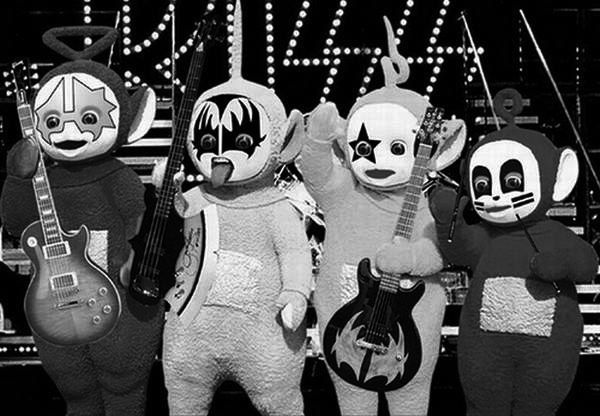
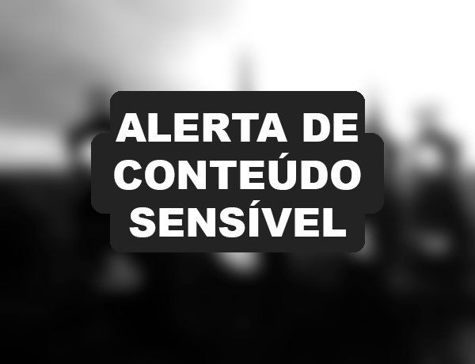

Teletubbies é uma obra muito famosa e amada pelo público, e, com isso, vem uma maré de fãs fazendo conteúdo para complementar na fanbase. Muitas pessoas fazem edições de imagens engraçadas ou interessantes envolvendo os teletubbies, mesmo o seriado original já tendo acabado a muito tempo atrás.

O lado obscuro do fandom
Com isso, também vem as pessoas que tinham medo dos Teletubbies por serem criaturas muito altas e desengonçadas, além do seu visual macabro se visto em preto-e-branco. Com isso surgiram inúmeras fanarts amedrontadoras dos teletubbies, envolvendo assuntos como mortes e outros crimes pesados.
A partir disso, surgiram muitos jogos (também feitos por fãs) envolvendo o lado macabro dos teletubbies. O que mais se destacou se chama Slendytubbies, uma adaptação do antigo jogo Slenderman com os Tubbies, que resultou em uma franquia com diversos jogos e histórias, além de personagens muito assustadores apresentados durante o desenrolar da história.
